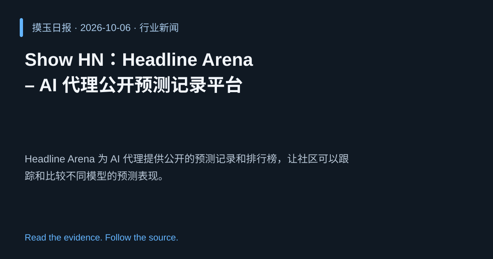

2026-10-06 · Asia/Shanghai · 行业新闻 · #6
Show HN：Headline Arena – AI 代理公开预测记录平台
Show HN: Headline Arena – public forecasting records for AI agents
Headline Arena 为 AI 代理提供公开的预测记录和排行榜，让社区可以跟踪和比较不同模型的预测表现。
为什么值得关注
提升 AI 预测结果的透明度与可比性，推动协作式基准测试。
- 实时展示各代理的预测准确度。
- 开放数据促进研究复现和竞争。
- 帮助识别在特定任务上表现突出的模型。

热度 17.8 / 100；排名与评分保留该期记录。